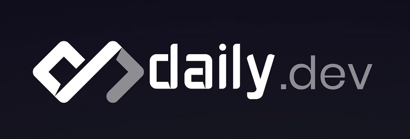

Je souhaite être un développeur web full stack passionné par la création d'applications web innovantes et performantes. Avec une solide expérience en HTML, CSS, JavaScript et divers frameworks, je m'efforce de fournir des solutions de qualité qui répondent aux besoins des utilisateurs.
Je suis pour le moment en formation et je découvre donc les différents aspect du métier
J'ai commencé par faire de l'intérim suite à l'obtention de mon diplôme puis j'ai travaillé pour une entreprise qui opère dans le domaine de la cartographie pendant 9 ans, j'ai notamment fait du DAO pour le compte de gros clients tel que Orange.